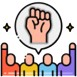

REPRESENTATION IN VARIOUS BODIES

Civil Society Forums
- Participation in civil society networks and coalitions
- Collaboration with other youth organizations for collective advocacy

Government Advisory Panels
- Representation in advisory panels and committees on youth-related matters
- Contribution to policy formulation and review processes

South African National AIDS Council (SANAC)
- National body coordinating the response to HIV, TB, and STIs in South Africa
- Brings together government, civil society, and private sector stakeholders

National Economic Development and Labour Council (NEDLAC)
- National platform for social dialogue on socio-economic policy discourse
- Constituted of government, business, labor, and community constituencies

National Skills Authority (NSA)
- Advises government on skills development discourse for the country

International Platforms
Engagement and representation in various global youth forums and conferences, such as:
- Southern African Development Community (SADC) Youth Union
- Pan African Youth Union
- Economic Social & Cultural Council (ECOSOCC) African Union
- African Peer Review Mechanism (APRM)
- Commonwealth Youth Council (CYC)
- Global Youth Parliament (GYP)